Rates of Change and Behavior of Graphs
Gasoline costs have experienced some wild fluctuations over the last several decades. Table 1http://www.eia.gov/totalenergy/data/annual/showtext.cfm?t=ptb0524. Accessed 3/5/2014. lists the average cost, in dollars, of a gallon of gasoline for the years 2005–2012. The cost of gasoline can be considered as a function of year.
| 2005 | 2006 | 2007 | 2008 | 2009 | 2010 | 2011 | 2012 | |
| 2.31 | 2.62 | 2.84 | 3.30 | 2.41 | 2.84 | 3.58 | 3.68 |
If we were interested only in how the gasoline prices changed between 2005 and 2012, we could compute that the cost per gallon had increased from $2.31 to $3.68, an increase of $1.37. While this is interesting, it might be more useful to look at how much the price changed per year. In this section, we will investigate changes such as these.
Finding the Average Rate of Change of a Function
The price change per year is a rate of change because it describes how an output quantity changes relative to the change in the input quantity. We can see that the price of gasoline in Table 1 did not change by the same amount each year, so the rate of change was not constant. If we use only the beginning and ending data, we would be finding the average rate of change over the specified period of time. To find the average rate of change, we divide the change in the output value by the change in the input value.
The Greek letter (delta) signifies the change in a quantity; we read the ratio as “delta-y over delta-x” or “the change in divided by the change in ” Occasionally we write instead of which still represents the change in the function’s output value resulting from a change to its input value. It does not mean we are changing the function into some other function.
In our example, the gasoline price increased by $1.37 from 2005 to 2012. Over 7 years, the average rate of change was
On average, the price of gas increased by about 19.6¢ each year.
Other examples of rates of change include:
- A population of rats increasing by 40 rats per week
- A car traveling 68 miles per hour (distance traveled changes by 68 miles each hour as time passes)
- A car driving 27 miles per gallon (distance traveled changes by 27 miles for each gallon)
- The current through an electrical circuit increasing by 0.125 amperes for every volt of increased voltage
- The amount of money in a college account decreasing by $4,000 per quarter
Computing an Average Rate of Change
Using the data in Table 1, find the average rate of change of the price of gasoline between 2007 and 2009.
Solution
In 2007, the price of gasoline was $2.84. In 2009, the cost was $2.41. The average rate of change is
Computing Average Rate of Change from a Graph
Given the function shown in Figure 1, find the average rate of change on the interval
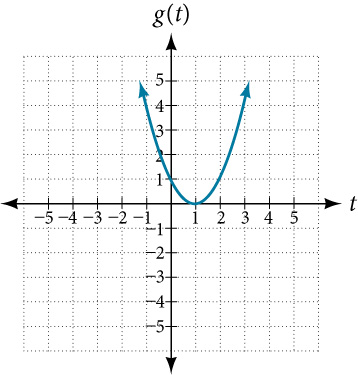
Solution
At Figure 2 shows At the graph shows
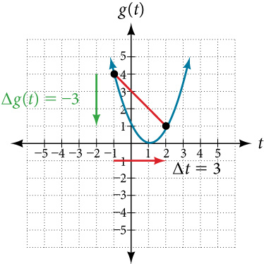
The horizontal change is shown by the red arrow, and the vertical change is shown by the turquoise arrow. The output changes by –3 while the input changes by 3, giving an average rate of change of
Analysis
Note that the order we choose is very important. If, for example, we use we will not get the correct answer. Decide which point will be 1 and which point will be 2, and keep the coordinates fixed as and
Computing Average Rate of Change from a Table
After picking up a friend who lives 10 miles away, Anna records her distance from home over time. The values are shown in Table 2. Find her average speed over the first 6 hours.
| t (hours) | 0 | 1 | 2 | 3 | 4 | 5 | 6 | 7 |
| D(t) (miles) | 10 | 55 | 90 | 153 | 214 | 240 | 292 | 300 |
Solution
Here, the average speed is the average rate of change. She traveled 282 miles in 6 hours, for an average speed of
The average speed is 47 miles per hour.
Analysis
Because the speed is not constant, the average speed depends on the interval chosen. For the interval [2,3], the average speed is 63 miles per hour.
Computing Average Rate of Change for a Function Expressed as a Formula
Compute the average rate of change of on the interval
Solution
We can start by computing the function values at each endpoint of the interval.
Now we compute the average rate of change.
Finding the Average Rate of Change of a Force
The electrostatic force measured in newtons, between two charged particles can be related to the distance between the particles in centimeters, by the formula Find the average rate of change of force if the distance between the particles is increased from 2 cm to 6 cm.
Solution
We are computing the average rate of change of on the interval
The average rate of change is newton per centimeter.
Finding an Average Rate of Change as an Expression
Find the average rate of change of on the interval The answer will be an expression involving
Solution
We use the average rate of change formula.
This result tells us the average rate of change in terms of between and any other point For example, on the interval the average rate of change would be
Using a Graph to Determine Where a Function is Increasing, Decreasing, or Constant
As part of exploring how functions change, we can identify intervals over which the function is changing in specific ways. We say that a function is increasing on an interval if the function values increase as the input values increase within that interval. Similarly, a function is decreasing on an interval if the function values decrease as the input values increase over that interval. The average rate of change of an increasing function is positive, and the average rate of change of a decreasing function is negative. Figure 3 shows examples of increasing and decreasing intervals on a function.

While some functions are increasing (or decreasing) over their entire domain, many others are not. A value of the input where a function changes from increasing to decreasing (as we go from left to right, that is, as the input variable increases) is the location of a local maximum. The function value at that point is the local maximum. If a function has more than one, we say it has local maxima. Similarly, a value of the input where a function changes from decreasing to increasing as the input variable increases is the location of a local minimum. The function value at that point is the local minimum. The plural form is “local minima.” Together, local maxima and minima are called local extrema, or local extreme values, of the function. (The singular form is “extremum.”) Often, the term local is replaced by the term relative. In this text, we will use the term local.
Clearly, a function is neither increasing nor decreasing on an interval where it is constant. A function is also neither increasing nor decreasing at extrema. Note that we have to speak of local extrema, because any given local extremum as defined here is not necessarily the highest maximum or lowest minimum in the function’s entire domain.
For the function whose graph is shown in Figure 4, the local maximum is 16, and it occurs at The local minimum is and it occurs at
![A graph of a function f(x) is displayed on a coordinate plane with the x-axis ranging from -5 to 5 and the f(x)-axis ranging from -20 to 20. The curve shows that the function is increasing from the left until it reaches a local maximum at the point (-2, 16), where it is noted that the local maximum is 16 and occurs at x = -2. Following this, the function decreases, passing through the origin, until it reaches a local minimum at the point (2, -16), with the caption indicating a local minimum of -16 occurring at x = 2. After this point, the function begins to increase again towards the right.](../../media/CNX_Precalc_Figure_01_03_014-7451.jpg)
To locate the local maxima and minima from a graph, we need to observe the graph to determine where the graph attains its highest and lowest points, respectively, within an open interval. Like the summit of a roller coaster, the graph of a function is higher at a local maximum than at nearby points on both sides. The graph will also be lower at a local minimum than at neighboring points. Figure 5 illustrates these ideas for a local maximum.
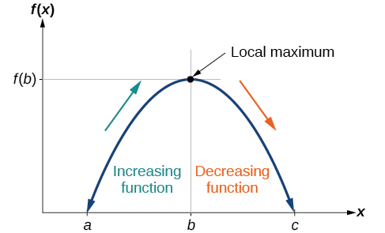
These observations lead us to a formal definition of local extrema.
Finding Increasing and Decreasing Intervals on a Graph
Given the function in Figure 6, identify the intervals on which the function appears to be increasing.

Solution
We see that the function is not constant on any interval. The function is increasing where it slants upward as we move to the right and decreasing where it slants downward as we move to the right. The function appears to be increasing from to and from on.
In interval notation, we would say the function appears to be increasing on the interval (1,3) and the interval
Analysis
Notice in this example that we used open intervals (intervals that do not include the endpoints), because the function is neither increasing nor decreasing at , , and . These points are the local extrema (two minima and a maximum).
Finding Local Extrema from a Graph
Graph the function Then use the graph to estimate the local extrema of the function and to determine the intervals on which the function is increasing.
Solution
Using technology, we find that the graph of the function looks like that in Figure 7. It appears there is a low point, or local minimum, between and and a mirror-image high point, or local maximum, somewhere between and
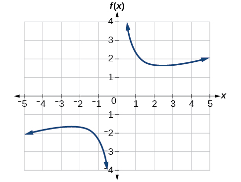
Analysis
Most graphing calculators and graphing utilities can estimate the location of maxima and minima. Figure 8 provides screen images from two different technologies, showing the estimate for the local maximum and minimum.
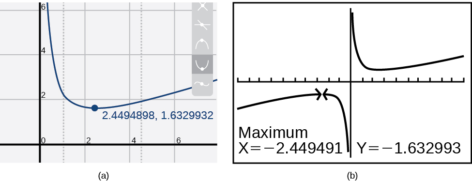
Based on these estimates, the function is increasing on the interval and Notice that, while we expect the extrema to be symmetric, the two different technologies agree only up to four decimals due to the differing approximation algorithms used by each. (The exact location of the extrema is at but determining this requires calculus.)
Finding Local Maxima and Minima from a Graph
For the function whose graph is shown in Figure 9, find all local maxima and minima.

Solution
Observe the graph of The graph attains a local maximum at because it is the highest point in an open interval around The local maximum is the -coordinate at which is
The graph attains a local minimum at because it is the lowest point in an open interval around The local minimum is the y-coordinate at which is
Analyzing the Toolkit Functions for Increasing or Decreasing Intervals
We will now return to our toolkit functions and discuss their graphical behavior in Figure 10, Figure 11, and Figure 12.

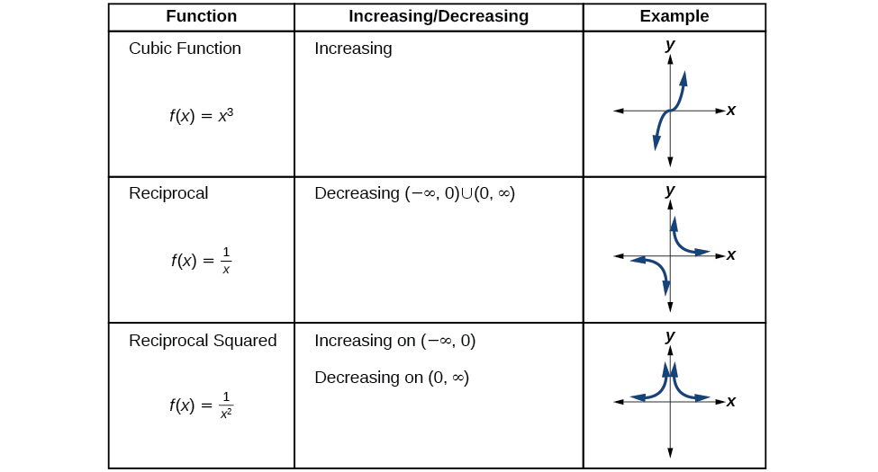
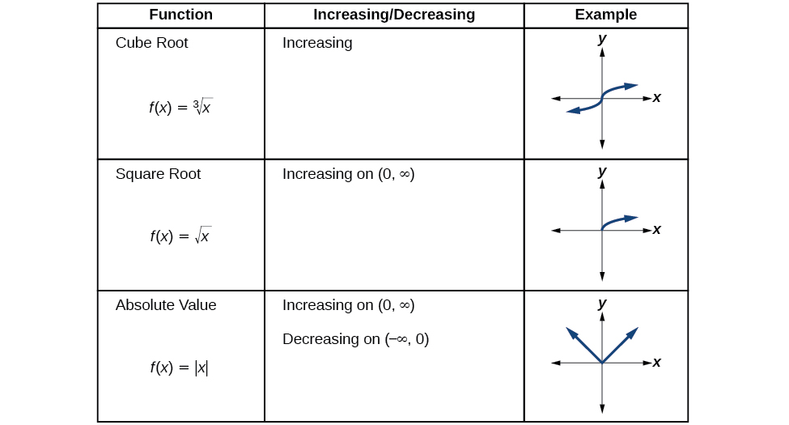
Use A Graph to Locate the Absolute Maximum and Absolute Minimum
There is a difference between locating the highest and lowest points on a graph in a region around an open interval (locally) and locating the highest and lowest points on the graph for the entire domain. The coordinates (output) at the highest and lowest points are called the absolute maximum and absolute minimum, respectively.
To locate absolute maxima and minima from a graph, we need to observe the graph to determine where the graph attains it highest and lowest points on the domain of the function. See Figure 13.
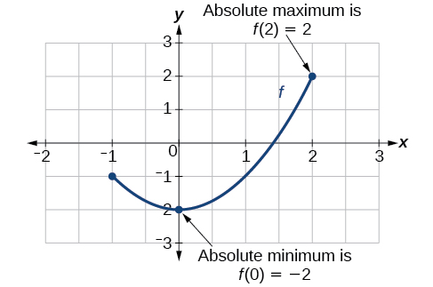
Not every function has an absolute maximum or minimum value. The toolkit function is one such function.
Finding Absolute Maxima and Minima from a Graph
For the function shown in Figure 14, find all absolute maxima and minima.
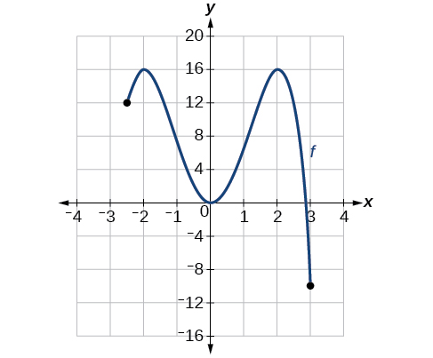
Solution
Observe the graph of The graph attains an absolute maximum in two locations, and because at these locations, the graph attains its highest point on the domain of the function. The absolute maximum is the y-coordinate at and which is
The graph attains an absolute minimum at because it is the lowest point on the domain of the function’s graph. The absolute minimum is the y-coordinate at which is
Key Equations
| Average rate of change |
Key Concepts
- A rate of change relates a change in an output quantity to a change in an input quantity. The average rate of change is determined using only the beginning and ending data. See Example 1.
- Identifying points that mark the interval on a graph can be used to find the average rate of change. See Example 2.
- Comparing pairs of input and output values in a table can also be used to find the average rate of change. See Example 3.
- An average rate of change can also be computed by determining the function values at the endpoints of an interval described by a formula. See Example 4 and Example 5.
- The average rate of change can sometimes be determined as an expression. See Example 6.
- A function is increasing where its rate of change is positive and decreasing where its rate of change is negative. See Example 7.
- A local maximum is where a function changes from increasing to decreasing and has an output value larger (more positive or less negative) than output values at neighboring input values.
- A local minimum is where the function changes from decreasing to increasing (as the input increases) and has an output value smaller (more negative or less positive) than output values at neighboring input values.
- Minima and maxima are also called extrema.
- We can find local extrema from a graph. See Example 8 and Example 9.
- The highest and lowest points on a graph indicate the maxima and minima. See Example 10.
Section Exercises
Verbal
Can the average rate of change of a function be constant?
Solution
Yes, the average rate of change of all linear functions is constant.
If a function is increasing on and decreasing on then what can be said about the local extremum of on
How are the absolute maximum and minimum similar to and different from the local extrema?
Solution
The absolute maximum and minimum relate to the entire graph, whereas the local extrema relate only to a specific region around an open interval.
How does the graph of the absolute value function compare to the graph of the quadratic function, in terms of increasing and decreasing intervals?
Algebraic
For the following exercises, find the average rate of change of each function on the interval specified for real numbers or
on
Solution
on
on
Solution
3
on
on
Solution
on
on
Solution
on
on
Solution
on
Find given on
Solution
Graphical
For the following exercises, consider the graph of shown in Figure 15.

Estimate the average rate of change from to
Estimate the average rate of change from to
Solution
For the following exercises, use the graph of each function to estimate the intervals on which the function is increasing or decreasing.

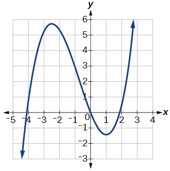
Solution
increasing on decreasing on

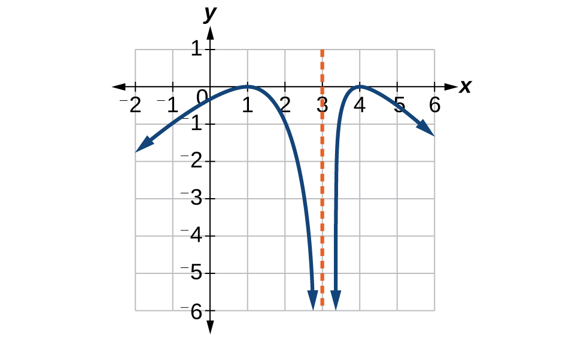
Solution
increasing on decreasing on
For the following exercises, consider the graph shown in Figure 16.
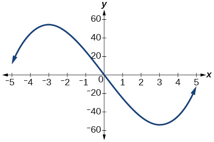
Estimate the intervals where the function is increasing or decreasing.
Estimate the point(s) at which the graph of has a local maximum or a local minimum.
Solution
local maximum: local minimum:
For the following exercises, consider the graph in Figure 17.
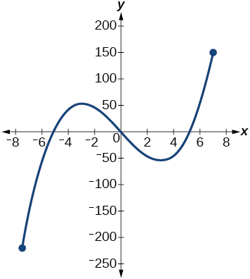
If the complete graph of the function is shown, estimate the intervals where the function is increasing or decreasing.
If the complete graph of the function is shown, estimate the absolute maximum and absolute minimum.
Solution
absolute maximum at approximately absolute minimum at approximately
Numeric
Table 3 gives the annual sales (in millions of dollars) of a product from 1998 to 2006. What was the average rate of change of annual sales (a) between 2001 and 2002, and (b) between 2001 and 2004?
| Year | Sales (millions of dollars) |
| 1998 | 201 |
| 1999 | 219 |
| 2000 | 233 |
| 2001 | 243 |
| 2002 | 249 |
| 2003 | 251 |
| 2004 | 249 |
| 2005 | 243 |
| 2006 | 233 |
Table 4 gives the population of a town (in thousands) from 2000 to 2008. What was the average rate of change of population (a) between 2002 and 2004, and (b) between 2002 and 2006?
| Year | Population (thousands) |
| 2000 | 87 |
| 2001 | 84 |
| 2002 | 83 |
| 2003 | 80 |
| 2004 | 77 |
| 2005 | 76 |
| 2006 | 78 |
| 2007 | 81 |
| 2008 | 85 |
Solution
a. –3000; b. –1250
For the following exercises, find the average rate of change of each function on the interval specified.
on
on
Solution
-4
on
on
Solution
27
on
on
Solution
–0.167
on
Technology
For the following exercises, use a graphing utility to estimate the local extrema of each function and to estimate the intervals on which the function is increasing and decreasing.
Solution
Local minimum at decreasing on increasing on
Solution
Local minimum at decreasing on increasing on
Solution
Local maximum at local minima at and decreasing on increasing on
Extension
The graph of the function is shown in Figure 18.
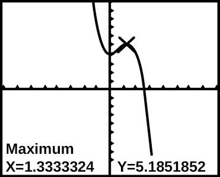
Based on the calculator screen shot, the point is which of the following?
- ⓐ a relative (local) maximum of the function
- ⓑ the vertex of the function
- ⓒ the absolute maximum of the function
- ⓓ a zero of the function
Solution
A
Let Find a number such that the average rate of change of the function on the interval is
Let . Find the number such that the average rate of change of on the interval is
Solution
Real-World Applications
At the start of a trip, the odometer on a car read 21,395. At the end of the trip, 13.5 hours later, the odometer read 22,125. Assume the scale on the odometer is in miles. What is the average speed the car traveled during this trip?
A driver of a car stopped at a gas station to fill up their gas tank. They looked at their watch, and the time read exactly 3:40 p.m. At this time, they started pumping gas into the tank. At exactly 3:44, the tank was full and they noticed that they had pumped 10.7 gallons. What is the average rate of flow of the gasoline into the gas tank?
Solution
2.7 gallons per minute
Near the surface of the moon, the distance that an object falls is a function of time. It is given by where is in seconds and is in feet. If an object is dropped from a certain height, find the average velocity of the object from to
The graph in Figure 19 illustrates the decay of a radioactive substance over days.
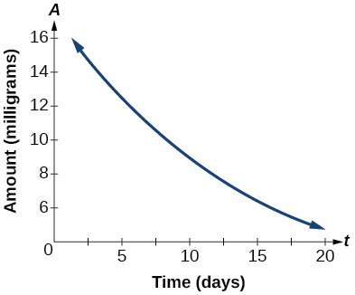
Use the graph to estimate the average decay rate from to
Solution
approximately –0.6 milligrams per day
Analysis
Note that a decrease is expressed by a negative change or “negative increase.” A rate of change is negative when the output decreases as the input increases or when the output increases as the input decreases.